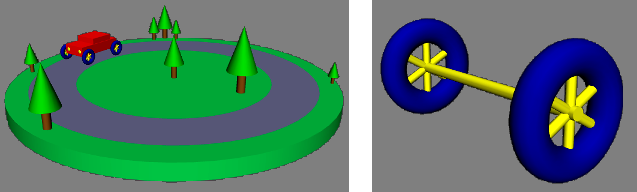

Section 5.1
Three.js Basics
Three.js is an object-oriented JavaScript library for 3D graphics. It is an open-source project originally created by Ricardo Cabello (who goes by the handle "mr.doob", https://mrdoob.com/), with contributions from other programmers. It seems to be the most popular open-source JavaScript library for 3D web applications. (Another popular option is Babylon.js.) Three.js uses concepts that you are already familiar with, such as geometric objects, transformations, lights, materials, textures, and cameras. But it also has additional features that build on the power and flexibility of WegGL.
You can download three.js and read the documentation at its main web site, https://threejs.org. The download is quite large, since it includes many examples and support files. This book uses Release 154 of the software, from July, 2023. You should be aware that some of the material about three.js that you might find on the Internet does not apply to the most recent release.
The current release of three.js is a "modular" JavaScript library. The older, non-modular form is still available, but it is deprecated and is scheduled to be removed in Release 160. Previous versions of this textbook used the non-modular version. Version 1.4 of the textbook has been updated to use three.js modules; aside from that, the three.js material has been changed only to account for some minor differences between three.js releases. (Notably, I found that I had to significantly increase the specular component of material colors.)
Copies of all three.js scripts that are used in this textbook can be found in the threejs/script folder in the source folder of this textbook's web site. The three.js license allows these files to be freely redistributed. But if you plan to do any serious work with three.js, you should read the documentation on its web site about how to use it and how to deploy it.
The core features of three.js are defined in a single large JavaScript file named "three.module.js", which can be found in a build directory in the three.js download. There is also a smaller "minified" version, three.module.min.js, that contains the same definitions in a format that is not meant to be human-readable. It is the minified version that is usually used on web pages. In addition to this core, the three.js download has a directory containing many examples and a variety of support files that are used in the examples. The examples use many features that are not part of the three.js core. These add-ons can be found in a folder named jsm inside the folder named examples in the three.js download. Several of the add-ons are used in this textbook and are included in the threejs/script folder.
5.1.1 About JavaScript Modules
The term "module" refers in general to a relatively independent component of a system. Modules interact in limited, well-defined ways. They are an important tool for building complex systems. In JavaScript, a module is a script that is isolated from other scripts, except that a module can "export" identifiers that it defines. Identifiers that are exported by one script can then be "imported" by another script. A module only has access to an identifier from another module if the identifier is explicitly exported by one module and imported by the other. Modules can also access identifiers from non-modular scripts, without having to import them.
A JavaScript module can export an identifier by adding the export modifier to its declaration. For example,
export const RED="0xFF0000";
export function setColor(c) { . . .
export class FancyDraw { . . .
Alternatively, it can list the identifiers that it wants to export in an export statement. For example,
export { RED, setColor, FancyDraw };
The export statement has many other options. However, here we are mostly interested in importing from three.js modules.
To use modular three.js, you will need to write a modular script. You can do that on a web page by adding the attribute type="module" to the <script> element:
<script type="module">
.
.
.
</script>
The script can then use import statements to access identifiers from other modules. For example,
<script type="module">
import { FancyDraw, setColor } from "./drawutil.js";
.
. // Use FancyDraw and setColor as usual!
.
This assumes that the module that exports the identifiers is defined in a script named drawutil.js in the same directory as the web page. Note that if the path to the script starts in the current directory, then the script name must start with "./".
My three.js examples use the file three.module.min.js from a directory named script in the same directory as the web page. They can import everything from that file using:
import * as THREE from "./script/three.module.min.js";
This form of the import statement gets all the exports from three.module.min.js and makes them properties of a new object named THREE. For example, the exported identifier Mesh is imported as THREE.Mesh. Again, the import statement has other forms, which are not covered here.
Many of my examples use add-ons that are not part of the main three.js script. I have placed the files that use them in subdirectories of my script directory. All of the files come from the examples/jsm folder in the three.js download. I have used the same subdirectory structure as that folder, because some of the files refer to files in other subdirectories by name. One of the add-on scripts is "OrbitControls.js" in the "controls" subdirectory. It exports a class named OrbitControls, which can be imported using
import { Orbitcontrols } from "./script/controls/OrbitControls.js";
The add-on modules import many resources from the main three.js module. Unfortunately, they don't know where to find that file. They rely on something called an "import map" to specify its location. An import map can be defined by another kind of script, with type="importmap". So, you will see that the scripts in many of my examples start something like this:
<script type="importmap">
{
"imports": {
"three": "./script/three.module.min.js",
"addons/": "./script/"
}
}
</script>
<script type="module">
import * as THREE from "three";
import { OrbitControls } from "addons/controls/OrbitControls.js";
import { GLTFLoader } from "addons/loaders/GLTFLoader.js";
The content of an "importmap" script is a JSON object. The import map here defines "three" to refer to the main three.js file, and it defines "addons/" to refer to the script directory. The add-on modules refer to the main three.js module as "three", so that mapping is necessary. The "addons/" mapping is actually not needed for my examples.
I have given you only a very brief overview of JavaScript modules—enough, I hope to let you understand my sample programs and write some similar programs of your own. For more complex projects, you should look at what the three.js developers have to say about setting up a development environment. See the "Installation" section of the Manual at https://threejs.org/docs/.
5.1.2 Scene, Renderer, Camera
Three.js works with the HTML <canvas> element, the same thing that we used for 2D graphics in Section 2.6. In almost all web browsers, in addition to its 2D Graphics API, a canvas also supports drawing in 3D using WebGL, which is used by three.js and which is about as different as it can be from the 2D API.
Three.js is an object-oriented scene graph API. (See Subsection 2.4.2.) The basic procedure is to build a scene graph out of three.js objects, and then to render an image of the scene it represents. Animation can be implemented by modifying properties of the scene graph between frames.
The three.js library is made up of a large number of classes. Three of the most basic are THREE.Scene, THREE.Camera, and THREE.WebGLRenderer. (There are actually several renderer classes available. THREE.WebGLRenderer is by far the most common. A renderer for WebGPU is available but is still under development.) A three.js program will need at least one object of each type. Those objects are often stored in global variables
let scene, renderer, camera;
Note that almost all of the three.js classes and constants that we will use are properties of an object named THREE, and their names begin with "THREE.". (The name "THREE" is defined in the import statement that imports the three.js features; you can use a different name.) I will sometimes refer to classes without using this prefix, and it is not usually used in the three.js documentation, but the prefix must always be included in actual program code.
A Scene object is a holder for all the objects that make up a 3D world, including lights, graphical objects, and possibly cameras. It acts as a root node for the scene graph. A Camera is a special kind of object that represents a viewpoint from which an image of a 3D world can be made. It represents a combination of a viewing transformation and a projection. A WebGLRenderer is an object that can create an image from a scene graph.
The scene is the simplest of the three objects. A scene can be created as an object of type THREE.Scene using a constructor with no parameters:
scene = new THREE.Scene();
The function scene.add(item) can be used to add cameras, lights, and graphical objects to the scene. It is probably the only scene function that you will need to call. The function scene.remove(item), which removes an item from the scene, is also occasionally useful.
There are two kinds of camera, one using orthographic projection and one using perspective projection. They are represented by classes THREE.OrthographicCamera and THREE.PerspectiveCamera, which are subclasses of THREE.Camera. The constructors specify the projection, using parameters that are familiar from OpenGL (see Subsection 3.3.3):
camera = new THREE.OrthographicCamera( left, right, top, bottom, near, far );
or
camera = new THREE.PerspectiveCamera( fieldOfViewAngle, aspect, near, far );
The parameters for the orthographic camera specify the x, y, and z limits of the view volume, in eye coordinates—that is, in a coordinate system in which the camera is at (0,0,0) looking in the direction of the negative z-axis, with the y-axis pointing up in the view. The near and far parameters give the z-limits in terms of distance from the camera. For an orthographic projection, near can be negative, putting the "near" clipping plane in back of the camera. The parameters are the same as for the OpenGL function glOrtho(), except for reversing the order of the two parameters that specify the top and bottom clipping planes.
Perspective cameras are more common. The parameters for the perspective camera come from the function gluPerspective() in OpenGL's GLU library. The first parameter determines the vertical extent of the view volume, given as an angle measured in degrees. The aspect is the ratio between the horizontal and vertical extents; it should usually be set to the width of the canvas divided by its height. And near and far give the z-limits on the view volume as distances from the camera. For a perspective projection, both must be positive, with near less than far. Typical code for creating a perspective camera would be:
camera = new THREE.PerspectiveCamera( 45, canvas.width/canvas.height, 1, 100 );
where canvas holds a reference to the <canvas> element where the image will be rendered. The near and far values mean that only things between 1 and 100 units in front of the camera are included in the image. Remember that using an unnecessarily large value for far or an unnecessarily small value for near can interfere with the accuracy of the depth test.
A camera, like other objects, can be added to a scene, but it does not have to be part of the scene graph to be used. You might add it to the scene graph if you want it to be a parent or child of another object in the graph. In any case, you will generally want to apply a modeling transformation to the camera to set its position and orientation in 3D space. I will cover that later when I talk about transformations more generally.
A renderer is an instance of the class THREE.WebGLRenderer. Its constructor has one parameter, which is a JavaScript object containing settings that affect the renderer. The settings you are most likely to specify are canvas, which tells the renderer where to draw, and antialias, which asks the renderer to use antialiasing if possible:
renderer = new THREE.WebGLRenderer( {
canvas: theCanvas,
antialias: true
} );
Here, theCanvas would be a reference to the <canvas> element where the renderer will display the images that it produces. (Note that the technique of having a JavaScript object as a parameter is used in many three.js functions. It makes it possible to support a large number of options without requiring a long list of parameters that must all be specified in some particular order. Instead, you only need to specify the options for which you want to provide non-default values, and you can specify those options by name, in any order.)
The main thing that you want to do with a renderer is render an image. For that, you also need a scene and a camera. To render an image of a given scene from the point of view of a given camera, call
renderer.render( scene, camera );
This is really the central command in any three.js application.
(I should note that most of the examples that I have seen do not provide a canvas to the renderer; instead, they allow the renderer to create it. The canvas can then be obtained from the renderer and added to the page. Furthermore, the canvas typically fills the entire browser window. The sample program threejs/full-window.html shows how to do that. However, all of my other examples use an existing canvas, with the renderer constructor shown above.)
5.1.3 THREE.Object3D
A three.js scene graph is made up of objects of type THREE.Object3D (including objects that belong to subclasses of that class). Cameras, lights, and visible objects are all represented by subclasses of Object3D. In fact, THREE.Scene itself is also a subclass of Object3D.
Any Object3D contains a list of child objects, which are also of type Object3D. The child lists define the structure of the scene graph. If node and object are of type Object3D, then the method node.add(object) adds object to the list of children of node. The method node.remove(object) can be used to remove an object from the list.
A three.js scene graph must, in fact, be a tree. That is, every node in the graph has a unique parent node, except for the root node, which has no parent. An Object3D, obj, has a property obj.parent that points to the parent of obj in the scene graph, if any. You should never set this property directly. It is set automatically when the node is added to the child list of another node. If obj already has a parent when it is added as a child of node, then obj is first removed from the child list of its current parent before it is added to the child list of node.
The children of an Object3D, obj, are stored in a property named obj.children, which is an ordinary JavaScript array. However, you should always add and remove children of obj using the methods obj.add() and obj.remove().
To make it easy to duplicate parts of the structure of a scene graph, Object3D defines a clone() method. This method copies the node, including the recursive copying of the children of that node. This makes it easy to include multiple copies of the same structure in a scene graph:
let node = THREE.Object3D();
.
. // Add children to node.
.
scene.add(node);
let nodeCopy1 = node.clone();
.
. // Modify nodeCopy1, maybe apply a transformation.
.
scene.add(nodeCopy1)
let nodeCopy2 = node.clone();
.
. // Modify nodeCopy2, maybe apply a transformation.
.
scene.add(nodeCopy2);
An Object3D, obj, has an associated transformation, which is given by properties obj.scale, obj.rotation, and obj.position. These properties represent a modeling transformation to be applied to the object and its children when the object is rendered. The object is first scaled, then rotated, then translated according to the values of these properties. (Transformations are actually more complicated than this, but we will keep things simple for now and will return to the topic later.)
The values of obj.scale and obj.position are objects of type THREE.Vector3. A Vector3 represents a vector or point in three dimensions. (There are similar classes THREE.Vector2 and THREE.Vector4 for vectors in 2 and 4 dimensions.) A Vector3 object can be constructed from three numbers that give the coordinates of the vector:
let v = new THREE.Vector3( 17, -3.14159, 42 );
This object has properties v.x, v.y, and v.z representing the coordinates. The properties can be set individually; for example: v.x = 10. They can also be set all at once, using the method v.set(x,y,z). The Vector3 class also has many methods implementing vector operations such as addition, dot product, and cross product.
For an Object3D, the properties obj.scale.x, obj.scale.y, and obj.scale.z give the amount of scaling of the object in the x, y, and z directions. The default values, of course, are 1. Calling
obj.scale.set(2,2,2);
means that the object will be subjected to a uniform scaling factor of 2 when it is rendered. Setting
obj.scale.y = 0.5;
will shrink it to half-size in the y-direction only (assuming that obj.scale.x and obj.scale.z still have their default values).
Similarly, the properties obj.position.x, obj.position.y, and obj.position.z give the translation amounts that will be applied to the object in the x, y, and z directions when it is rendered. For example, since a camera is an Object3D, setting
camera.position.z = 20;
means that the camera will be moved from its default position at the origin to the point (0,0,20) on the positive z-axis. This modeling transformation on the camera becomes a viewing transformation when the camera is used to render a scene.
The object obj.rotation has properties obj.rotation.x, obj.rotation.y, and obj.rotation.z that represent rotations about the x-, y-, and z-axes. The angles are measured in radians. The object is rotated first about the x-axis, then about the y-axis, then about the z-axis. (It is possible to change this order.) The value of obj.rotation is not a vector. Instead, it belongs to a similar type, THREE.Euler, and the angles of rotation are called Euler angles.
5.1.4 Object, Geometry, Material
A visible object in three.js is made up of either points, lines, or triangles. An individual object corresponds to an OpenGL primitive such as GL_POINTS, GL_LINES, or GL_TRIANGLES (see Subsection 3.1.1). There are five classes to represent these possibilities: THREE.Points for points, THREE.Mesh for triangles, and three classes for lines: THREE.Line, which uses the GL_LINE_STRIP primitive; THREE.LineSegments, which uses the GL_LINES primitive; and THREE.LineLoop, which uses the GL_LINE_LOOP primitive.
A visible object is made up of some geometry plus a material that determines the appearance of that geometry. In three.js, the geometry and material of a visible object are themselves represented by JavaScript classes THREE.BufferGeometry and THREE.Material.
An object of type THREE.BufferGeometry can store vertex coordinates and their attributes. (In fact, the vertex coordinates are also considered to be an "attribute" of the geometry.) These values must be stored in a form suitable for use with the OpenGL functions glDrawArrays and glDrawElements (see Subsection 3.4.2). For JavaScript, this means that they must be stored in typed arrays. A typed array is similar to a normal JavaScript array, except that its length is fixed and it can only hold numerical values of a certain type. For example, a Float32Array holds 32-bit floating point numbers, and a UInt16Array holds unsigned 16-bit integers. A typed array can be created with a constructor that specifies the length of the array. For example,
vertexCoords = new Float32Array(300); // Space for 300 numbers.
Alternatively, the constructor can take an ordinary JavaScript array of numbers as its parameter. This creates a typed array that holds the same numbers. For example,
data = new Float32Array( [ 1.3, 7, -2.89, 0, 3, 5.5 ] );
In this case, the length of data is six, and it contains copies of the numbers from the JavaScript array.
Specifying the vertices for a BufferGeometry is a multistep process. You need to create a typed array containing the coordinates of the vertices. Then you need to wrap that array inside an object of type THREE.BufferAttribute. Finally, you can add the attribute to the geometry. Here is an example:
let vertexCoords = new Float32Array([ 0,0,0, 1,0,0, 0,1,0 ]); let vertexAttrib = new THREE.BufferAttribute(vertexCoords, 3); let geometry = new THREE.BufferGeometry(); geometry.setAttribute( "position", vertexAttrib );
The second parameter to the BufferGeometry constructor is an integer that tells three.js the number of coordinates of each vertex. Recall that a vertex can be specified by 2, 3, or 4 coordinates, and you need to specify how many numbers are provided in the array for each vertex. Turning to the setAttribute() function, a BufferGeometry can have attributes specifying color, normal vectors, and texture coordinates, as well as other custom attributes. The first parameter to setAttribute() is the name of the attribute. Here, "position" is the name of the attribute that specifies the coordinates, or position, of the vertices.
Similarly, to specify a color for each vertex, you can put the RGB components of the colors into a Float32Array, and use that to specify a value for the BufferGeometry attribute named "color".
For a specific example, suppose that we want to represent a primitive of type GL_POINTS, using a three.js object of type THREE.Points. Let's say we want 10000 points placed at random inside the unit sphere, where each point can have its own random color. Here is some code that creates the necessary BufferGeometry:
let pointsBuffer = new Float32Array( 30000 ); // 3 numbers per vertex!
let colorBuffer = new Float32Array( 30000 );
let i = 0;
while ( i < 10000 ) {
let x = 2*Math.random() - 1;
let y = 2*Math.random() - 1;
let z = 2*Math.random() - 1;
if ( x*x + y*y + z*z < 1 ) {
// only use points inside the unit sphere
pointsBuffer[3*i] = x;
pointsBuffer[3*i+1] = y;
pointsBuffer[3*i+2] = z;
colorBuffer[3*i] = 0.25 + 0.75*Math.random();
colorBuffer[3*i+1] = 0.25 + 0.75*Math.random();
colorBuffer[3*i+2] = 0.25 + 0.75*Math.random();
i++;
}
}
let pointsGeom = new THREE.BufferGeometry();
pointsGeom.setAttribute("position",
new THREE.BufferAttribute(pointsBuffer,3));
pointsGeom.setAttribute("color",
new THREE.BufferAttribute(colorBuffer,3));
In three.js, to make some geometry into a visible object, we also need an appropriate material. For example, for an object of type THREE.Points, we can use a material of type THREE.PointsMaterial, which is a subclass of Material. The material can specify the color and the size of the points, among other properties:
let pointsMat = new THREE.PointsMaterial( {
color: "yellow",
size: 2,
sizeAttenuation: false
} );
The parameter to the constructor is a JavaScript object whose properties are used to initialize the material. With the sizeAttenuation property set to false, the size is given in pixels; if it is true, then size represents the size in world coordinates and the point is scaled to reflect distance from the viewer. If the color is omitted, a default value of white is used. The default for size is 1 and for sizeAttenuation is true. The parameter to the constructor can be omitted entirely, to use all the defaults. A PointsMaterial is not affected by lighting; it simply shows the color specified by its color property.
It is also possible to assign values to properties of the material after the object has been created. For example,
let pointsMat = new THREE.PointsMaterial();
pointsMat.color = new THREE.Color("yellow");
pointsMat.size = 2;
pointsMat.sizeAttenuation = false;
Note that the color is set as a value of type THREE.Color, which is constructed from a string, "yellow". When the color property is set in the material constructor, the same conversion of string to color is done automatically.
Once we have the geometry and the material, we can use them to create the visible object, of type THREE.Points, and add it to a scene:
let sphereOfPoints = new THREE.Points( pointsGeom, pointsMat ); scene.add( sphereOfPoints );
This will show a cloud of yellow points. But we wanted each point to have its own color! Recall that the colors for the points are stored in the geometry, not in the material. We have to tell the material to use the colors from the geometry, not the material's own color property. This is done by setting the value of the material property vertexColors to true. So, we could create the material using
let pointsMat = new THREE.PointsMaterial( {
color: "white",
size: 2,
sizeAttenuation: false,
vertexColors: true
} );
White is used here as the material color because the vertex colors are actually multiplied by the material color, not simply substituted for it.
The following demo shows a point cloud. You can control whether the points are all yellow or are randomly colored. You can animate the points, and you can control the size and number of points. Note that points are rendered as squares.
The color parameter in the above material was specified by the string "yellow". Colors in three.js can be represented by values of type THREE.Color. The class THREE.Color represents an RGB color. A Color object c has properties c.r, c.g, and c.b giving the red, blue, and green color components as floating point numbers in the range from 0.0 to 1.0. Note that there is no alpha component; three.js handles transparency separately from color.
There are several ways to construct a THREE.Color object. The constructor can take three parameters giving the RGB components as real numbers in the range 0.0 to 1.0. It can take a single string parameter giving the color as a CSS color string, like those used in the 2D canvas graphics API; examples include "white", "red", "rgb(255,0,0)", and "#FF0000". Or the color constructor can take a single integer parameter in which each color component is given as an eight-bit field in the integer. Usually, an integer that is used to represent a color in this way is written as a hexadecimal literal, beginning with "0x". Examples include 0xff0000 for red, 0x00ff00 for green, 0x0000ff for blue, and 0x007050 for a dark blue-green. Here are some examples of using color constructors:
let c1 = new THREE.Color("skyblue");
let c2 = new THREE.Color(1,1,0); // yellow
let c3 = new THREE.Color(0x98fb98); // pale green
In many contexts, such as the THREE.Points constructor, three.js will accept a string or integer where a color is required; the string or integer will be fed through the Color constructor. As another example, a WebGLRenderer object has a "clear color" property that is used as the background color when the renderer renders a scene. This property could be set using any of the following commands:
renderer.setClearColor( new THREE.Color(0.6, 0.4, 0.1) ); renderer.setClearColor( "darkgray" ); renderer.setClearColor( 0x99BBEE );
Turning next to lines, an object of type THREE.Line represents a line strip—what would be a primitive of the type called GL_LINE_STRIP in OpenGL. To get the same strip of connected line segments, plus a line back to the starting vertex, we can use an object of type THREE.LineLoop. For the outline of a triangle, for example, we could provide a BufferGeometry holding coordinates for three points and use a LineLoop.
We will also need a material. For lines, the material can be represented by an object of type THREE.LineBasicMaterial. As usual, the parameter for the constructor is a JavaScript object, whose properties can include color and linewidth. For example:
let lineMat = new THREE.LineBasicMaterial( {
color: 0xA000A0, // purple; the default is white
linewidth: 2 // 2 pixels; the default is 1
} );
(The linewidth property might not be respected. According to the specification, a WebGL implementation can set the maximum line width to 1.)
As with points, it is possible to specify a different color for each purpose by adding a "color" attribute to the geometry and setting the value of the vertexColors material property to true. Here is a complete example that makes a triangle with vertices colored red, green, and blue:
let positionBuffer = new Float32Array([
-2, -2, // Coordinates for first vertex.
2, -2, // Coordinates for second vertex.
0, 2 // Coordinates for third vertex.
]);
let colorBuffer = new Float32Array([
1, 0, 0, // Color for first vertex (red).
0, 1, 0, // Color for second vertex (green).
0, 0, 1 // Color for third vertex (blue).
]);
let lineGeometry = new THREE.BufferGeometry();
lineGeometry.setAttribute(
"position",
new THREE.BufferAttribute(positionBuffer,2)
);
lineGeometry.setAttribute(
"color",
new THREE.BufferAttribute(colorBuffer,3)
);
let lineMaterial = new THREE.LineBasicMaterial( {
linewidth: 3,
vertexColors: true
} );
let triangle = new THREE.LineLoop( lineGeometry, lineMaterial );
scene.add(triangle);
This produces the image:

The "Basic" in LineBasicMaterial indicates that this material uses basic colors that do not require lighting to be visible and are not affected by lighting. This is generally what you want for lines.
A mesh object in three.js corresponds to the OpenGL primitive GL_TRIANGLES. The geometry object for a mesh must specify which vertices are part of which triangles. We will see how to do that in the next section. However, three.js comes with classes to represent common mesh geometries, such as a sphere, a cylinder, and a torus. For these built-in classes, you just need to call a constructor to create the appropriate geometry. For example, the class THREE.CylinderGeometry represents the geometry for a cylinder, and its constructor takes the form
new THREE.CylinderGeometry(radiusTop, radiusBottom, height,
radiusSegments, heightSegments, openEnded, thetaStart, thetaLength)
The geometry created by this constructor represents an approximation for a cylinder that has its axis lying along the y-axis. It extends from −height/2 to height/2 along that axis. The radius of its circular top is radiusTop and of its bottom is radiusBottom. The two radii don't have to be the same; when the are different, you get a truncated cone rather than a cylinder as such. Using a value of zero for radiusTop makes an actual cone. The parameters radiusSegments and heightSegments give the number of subdivisions around the circumference of the cylinder and along its length respectively—what are called slices and stacks in the GLUT library for OpenGL. The parameter openEnded is a boolean value that indicates whether the top and bottom of the cylinder are to be drawn; use the value true to get an open-ended tube. Finally, the last two parameters allow you to make a partial cylinder. Their values are given as angles, measured in radians, about the y-axis. Only the part of the cylinder beginning at thetaStart and ending at thetaStart plus thetaLength is rendered. For example, if thetaLength is Math.PI, you will get a half-cylinder.
The large number of parameters to the constructor gives a lot of flexibility. The parameters are all optional. The default value for each of the first three parameters is one. The default for radiusSegments is 8, which gives a poor approximation for a smooth cylinder. Leaving out the last three parameters will give a complete cylinder, closed at both ends.
Other standard mesh geometries are similar. Here are some constructors, listing all parameters (but keep in mind that most of the parameters are optional):
new THREE.BoxGeometry(width, height, depth,
widthSegments, heightSegments, depthSegments)
new THREE.PlaneGeometry(width, height, widthSegments, heightSegments)
new THREE.RingGeometry(innerRadius, outerRadius, thetaSegments, phiSegments,
thetaStart, thetaLength)
new THREE.ConeGeometry(radiusBottom, height, radiusSegments,
heightSegments, openEnded, thetaStart, thetaLength)
new THREE.SphereGeometry(radius, widthSegments, heightSegments,
phiStart, phiLength, thetaStart, thetaLength)
new THREE.TorusGeometry(radius, tube, radialSegments, tubularSegments, arc)
The class BoxGeometry represents the geometry of a rectangular box centered at the origin. Its constructor has three parameters to give the size of the box in each direction; their default value is one. The last three parameters give the number of subdivisions in each direction, with a default of one; values greater than one will cause the faces of the box to be subdivided into smaller triangles.
The class PlaneGeometry represents the geometry of a rectangle lying in the xy-plane, centered at the origin. Its parameters are similar to those for a cube. A RingGeometry represents an annulus, that is, a disk with a smaller disk removed from its center. The ring lies in the xy-plane, with its center at the origin. You should always specify the inner and outer radii of the ring.
The constructor for ConeGeometry has exactly the same form and effect as the constructor for CylinderGeometry, with the radiusTop set to zero. That is, it constructs a cone with axis along the y-axis and centered at the origin.
For SphereGeometry, all parameters are optional. The constructor creates a sphere centered at the origin, with axis along the y-axis. The first parameter, which gives the radius of the sphere, has a default of one. The next two parameters give the numbers of slices and stacks, with default values 32 and 16. The last four parameters allow you to make a piece of a sphere; the default values give a complete sphere. The four parameters are angles measured in radians. phiStart and phiLength are measured in angles around the equator and give the extent in longitude of the spherical shell that is generated. For example,
new THREE.SphereGeometry( 5, 32, 16, 0, Math.PI )
creates the geometry for the "western hemisphere" of a sphere. The last two parameters are angles measured along a line of latitude from the north pole of the sphere to the south pole. For example, to get the sphere's "northern hemisphere":
new THREE.SphereGeometry( 5, 32, 16, 0, 2*Math.PI, 0, Math.PI/2 )
For TorusGeometry, the constructor creates a torus lying in the xy-plane, centered at the origin, with the z-axis passing through its hole. The parameter radius is the distance from the center of the torus to the center of the torus's tube, while tube is the radius of the tube. The next two parameters give the number of subdivisions in each direction. The last parameter, arc, allows you to make just part of a torus. It is an angle between 0 and 2*Math.PI, measured along the circle at the center of the tube.
There are also geometry classes representing the regular polyhedra: THREE.TetrahedronGeometry, THREE.OctahedronGeometry, THREE.DodecahedronGeometry, and THREE.IcosahedronGeometry. (For a cube use a BoxGeometry.) The constructors for these four classes take two parameters. The first specifies the size of the polyhedron, with a default of 1. The size is given as the radius of the sphere that contains the polyhedron. The second parameter is an integer called detail. The default value, 0, gives the actual regular polyhedron. Larger values add detail by adding additional faces. As the detail increases, the polyhedron becomes a better approximation for a sphere. This is easier to understand with an illustration:

The image shows four mesh objects that use icosahedral geometries with detail parameter equal to 0, 1, 2, and 3.
To create a mesh object, you need a material as well as a geometry. There are several kinds of material suitable for mesh objects, including THREE.MeshBasicMaterial, THREE.MeshLambertMaterial, and THREE.MeshPhongMaterial. (There are more mesh materials, including two newer ones, THREE.MeshStandardMaterial and THREE.MeshPhysicalMaterial, that implement techniques associated with physically based rendering, an approach to improved rendering that has become popular. However, I will not cover them here.)
A MeshBasicMaterial represents a color that is not affected by lighting; it looks the same whether or not there are lights in the scene, and it is not shaded, giving it a flat rather than 3D appearance. The other two classes represent materials that need to be lit to be seen. They implement models of lighting known as Lambert shading and Phong shading. The major difference is that MeshPhongMaterial has a specular color but MeshLambertMaterial does not. Both can have diffuse and emissive colors. For all three material classes, the constructor has one parameter, a JavaScript object that specifies values for properties of the material. For example:
let mat = new THREE.MeshPhongMaterial( {
color: 0xbbbb00, // reflectivity for diffuse and ambient light
emissive: 0, // emission color; this is the default (black)
specular: 0x303030, // reflectivity for specular light
shininess: 50 // controls size of specular highlights
} );
This example shows the four color parameters for a Phong material. The parameters have the same meaning as the five material properties in OpenGL (Subsection 4.1.1). A Lambert material lacks specular and shininess, and a basic mesh material has only the color parameter.
There are a few other material properties that you might need to set in the constructor. Except for flatShading, these apply to all three kinds of mesh material:
- vertexColors — a boolean property that can be set to true to use vertex colors from the geometry. The default is false.
- wireframe — a boolean value that indicates whether the mesh should be drawn as a wireframe model, showing only the outlines of its faces. The default is false. A true value works best with MeshBasicMaterial.
- wireframeLinewidth — the width of the lines used to draw the wireframe, in pixels. The default is 1. (Non-default values might not be respected.)
- visible — a boolean value that controls whether the object on which it is used is rendered or not, with a default of true.
- side — has value THREE.FrontSide, THREE.BackSide, or THREE.DoubleSide, with the default being THREE.FrontSide. This determines whether faces of the mesh are drawn or not, depending on which side of the face is visible. With the default value, THREE.FrontSide, a face is drawn only if it is being viewed from the front. THREE.DoubleSide will draw it whether it is viewed from the front or from the back, and THREE.BackSide only if it is viewed from the back. For closed objects, such as a cube or a complete sphere, the default value makes sense, at least as long as the viewer is outside of the object. For a plane, an open tube, or a partial sphere, the value should be set to THREE.DoubleSide. Otherwise, parts of the object that should be in view won't be drawn.
- flatShading — a boolean value, with the default being false. This does not work for MeshBasicMaterial. For an object that is supposed to look "faceted," with flat sides, it is important to set this property to true. That would be the case, for example, for a cube or for a cylinder with a small number of sides.
As an example, let's make a shiny, blue-green, open, five-sided tube with flat sides:
let mat = new THREE.MeshPhongMaterial( {
color: 0x0088aa,
specular: 0x003344,
shininess: 100,
flatShading: true, // for flat-looking sides
side: THREE.DoubleSide // for drawing the inside of the tube
} );
let geom = new THREE.CylinderGeometry(3,3,10,5,1,true);
let obj = new THREE.Mesh(geom,mat);
scene.add(obj);
You can use the following demo to view several three.js mesh objects, using a variety of geometries and materials. Drag your mouse on the object to rotate it. You can also explore the level of detail for the regular polyhedron geometries.
The demo can show a wireframe version of an object overlaid on a solid version. In three.js, the wireframe and solid versions are actually two objects that use the same geometry but different materials. Drawing two objects at exactly the same depth can be a problem for the depth test. You might remember from Subsection 3.4.1 that OpenGL uses polygon offset to solve the problem. In three.js, you can apply polygon offset to a material. In the demos, this is done for the solid materials that are shown at the same time as wireframe materials. For example,
mat = new THREE.MeshLambertMaterial({
polygonOffset: true,
polygonOffsetUnits: 1,
polygonOffsetFactor: 1,
color: "yellow",
side: THREE.DoubleSide
});
The settings shown here for polygonOffset, polygonOffsetUnits, and polygonOffsetFactor will increase the depth of the object that uses this material slightly so that it doesn't interfere with the wireframe version of the same object.
One final note: You don't always need to make new materials and geometries to make new objects. You can reuse the same materials and geometries in multiple objects.
5.1.5 Lights
Compared to geometries and materials, lights are easy! Three.js has several classes to represent lights. Light classes are subclasses of THREE.Object3D. A light object can be added to a scene and will then illuminate objects in the scene. We'll look at directional lights, point lights, ambient lights, and spotlights.
The class THREE.DirectionalLight represents light that shines in parallel rays from a given direction, like the light from the sun. The position property of a directional light gives the direction from which the light shines. (This is the same position property, of type Vector3, that all scene graph objects have, but the meaning is different for directional lights.) Note that the light shines from the given position towards the origin. The default position is the vector (0,1,0), which gives a light shining down the y-axis. The constructor for this class has two parameters:
new THREE.DirectionalLight( color, intensity )
where color specifies the color of the light, given as a THREE.Color object, or as a hexadecimal integer, or as a CSS color string. Lights do not have separate diffuse and specular colors, as they do in OpenGL. The intensity is a non-negative number that controls the brightness of the light, with larger values making the light brighter. A light with intensity zero gives no light at all. The parameters are optional. The default for color is white (0xffffff) and for intensity is 1. The intensity can be greater than 1, but values less than 1 are usually preferable, to avoid having too much illumination in the scene.
Suppose that we have a camera on the positive z-axis, looking towards the origin, and we would like a light that shines in the same direction that the camera is looking. We can use a directional light whose position is on the positive z-axis:
let light = new THREE.DirectionalLight(); // default white light light.position.set( 0, 0, 1 ); scene.add(light);
The class THREE.PointLight represents a light that shines in all directions from a point. The location of the point is given by the light's position property. The constructor has three optional parameters:
new THREE.PointLight( color, intensity, cutoff )
The first two parameters are the same as for a directional light, with the same defaults. The cutoff is a non-negative number. If the value is zero—which is the default—then the illumination from the light extends to infinity, and intensity does not decrease with distance. While this is not physically realistic, it generally works well in practice. If cutoff is greater than zero, then the intensity falls from a maximum value at the light's position down to an intensity of zero at a distance of cutoff from the light; the light has no effect on objects that are at a distance greater than cutoff. This falloff of light intensity with distance is referred to as attenuation of the light source.
A third type of light is THREE.AmbientLight. This class exists to add ambient light to a scene. An ambient light has only a color:
new THREE.AmbientLight( color )
Adding an ambient light object to a scene adds ambient light of the specified color to the scene. The color components of an ambient light should be rather small to avoid washing out colors of objects.
For example, suppose that we would like a yellowish point light at (10,30,15) whose illumination falls off with distance from that point, out to a distance of 100 units. We also want to add a bit of yellow ambient light to the scene:
let light = new THREE.PointLight( 0xffffcc, 1, 100 ); light.position.set( 10, 30, 15 ); scene.add(light); scene.add( new THREE.AmbientLight(0x111100) );
The fourth type of light, THREE.SpotLight, is something new for us. An object of that type represents a spotlight, which is similar to a point light, except that instead of shining in all directions, a spotlight only produces a cone of light. The vertex of the cone is located at the position of the light. By default, the axis of the cone points from that location towards the origin (so unless you change the direction of the axis, you should move the position of the light away from the origin). The constructor adds two parameters to those for a point light:
new THREE.SpotLight( color, intensity, cutoff, coneAngle, exponent )
The coneAngle is a number between 0 and Math.PI/2 that determines the size of the cone of light. It is the angle between the axis of the cone and the side of the cone. The default value is Math.PI/3. The exponent is a non-negative number that determines how fast the intensity of the light decreases as you move from the axis of the cone toward the side. The default value, 10, gives a reasonable result. An exponent of zero gives no falloff at all, so that objects at all distances from the axis are evenly illuminated.
The technique for setting the direction of a three.js spotlight is a little odd, but it does make it easy to control the direction. An object spot of type SpotLight has a property named spot.target. The target is a scene graph node. The cone of light from the spotlight is pointed in the direction from spotlight's position towards the target's position. When a spotlight is first created, its target is a new, empty Object3D, with position at (0,0,0). However, you can set the target to be any object in the scene graph, which will make the spotlight shine towards that object. For three.js to calculate the spotlight direction, a target whose position is anything other than the origin must actually be a node in the scene graph. For example, suppose we want a spotlight located at the point (0,0,5) and pointed towards the point (2,2,0):
spotlight = new THREE.SpotLight(); spotlight.position.set(0,0,5); spotlight.target.position.set(2,2,0); scene.add(spotlight); scene.add(spotlight.target);
5.1.6 A Modeling Example
In the rest of this chapter, we will go much deeper into three.js, but you already know enough to build 3D models from basic geometric objects. An example is in the sample program threejs/diskworld-1.html, which shows a very simple model of a car driving around the edge of a cylindrical base. The car has rotating tires. The diskworld is shown in the picture on the left below. The picture on the right shows one of the axles from the car, with a tire on each end.

I will discuss some of the code that is used to build these models. If you want to experiment with your own models, you can use the program threejs/modeling-starter.html as a starting point.
To start with something simple, let's look at how to make a tree from a brown cylinder and a green cone. I use an Object3D to represent the tree as a whole, so that I can treat it as a unit. The two geometric objects are added as children of the Object3D.
let tree = new THREE.Object3D();
let trunk = new THREE.Mesh(
new THREE.CylinderGeometry(0.2,0.2,1,16,1),
new THREE.MeshLambertMaterial({
color: 0x885522
})
);
trunk.position.y = 0.5; // move base up to origin
let leaves = new THREE.Mesh(
new THREE.ConeGeometry(.7,2,16,3),
new THREE.MeshPhongMaterial({
color: 0x00BB00,
specular: 0x002000,
shininess: 5
})
);
leaves.position.y = 2; // move bottom of cone to top of trunk
tree.add(trunk);
tree.add(leaves);
The trunk is a cylinder with height equal to 1. Its axis lies along the y-axis, and it is centered at the origin. The plane of the diskworld lies in the xz-plane, so I want to move the bottom of the trunk onto that plane. This is done by setting the value of trunk.position.y, which represents a translation to be applied to the trunk. Remember that objects have their own modeling coordinate system. The properties of objects that specify transformations, such as trunk.position, transform the object in that coordinate system. In this case, the trunk is part of a larger, compound object that represents the whole tree. When the scene is rendered, the trunk is first transformed by its own modeling transformation. It is then further transformed by any modeling transformation that is applied to the tree as a whole. (This type of hierarchical modeling was first covered in Subsection 2.4.1.)
Once we have a tree object, it can be added to the model that represents the diskworld. In the program, the model is an object of type Object3D named diskworldModel. The model will contain several trees, but the trees don't have to be constructed individually. I can make additional trees by cloning the one that I have already created. For example:
tree.position.set(-1.5,0,2); tree.scale.set(0.7,0.7,0.7); diskworldModel.add( tree.clone() ); tree.position.set(-1,0,5.2); tree.scale.set(0.25,0.25,0.25); diskworldModel.add( tree.clone() );
This adds two trees to the model, with different sizes and positions. When the tree is cloned, the clone gets its own copies of the modeling transformation properties, position and scale. Changing the values of those properties in the original tree object does not affect the clone.
Lets turn to a more complicated object, the axle and wheels. I start by creating a wheel, using a torus for the tire and using three copies of a cylinder for the spokes. In this case, instead of making a new Object3D to hold all the components of the wheel, I add the cylinders as children of the torus. Remember that any screen graph node in three.js can have child nodes.
let wheel = new THREE.Mesh( // the tire; spokes will be added as children
new THREE.TorusGeometry(0.75, 0.25, 16, 32),
new THREE.MeshLambertMaterial({ color: 0x0000A0 })
);
let yellow = new THREE.MeshPhongMaterial({
color: 0xffff00,
specular: 0x101010,
shininess: 16
});
let cylinder = new THREE.Mesh( // a cylinder with height 1 and diameter 1
new THREE.CylinderGeometry(0.5,0.5,1,32,1),
yellow
);
cylinder.scale.set(0.15,1.2,0.15); // Make it thin and tall for use as a spoke.
wheel.add( cylinder.clone() ); // Add a copy of the cylinder.
cylinder.rotation.z = Math.PI/3; // Rotate it for the second spoke.
wheel.add( cylinder.clone() );
cylinder.rotation.z = -Math.PI/3; // Rotate it for the third spoke.
wheel.add( cylinder.clone() );
Once I have the wheel model, I can use it along with one more cylinder to make the axle. For the axle, I use a cylinder lying along the z-axis. The wheel lies in the xy-plane. It is facing in the correct direction, but it lies in the center of the axle. To get it into its correct position at the end of the axle, it just has to be translated along the z-axis.
axleModel = new THREE.Object3D(); // A model containing two wheels and an axle. cylinder.scale.set(0.2,4.3,0.2); // Scale the cylinder for use as an axle. cylinder.rotation.set(Math.PI/2,0,0); // Rotate its axis onto the z-axis. axleModel.add( cylinder ); wheel.position.z = 2; // Wheels are positioned at the two ends of the axle. axleModel.add( wheel.clone() ); wheel.position.z = -2; axleModel.add( wheel );
Note that for the second wheel, I add the original wheel model rather than a clone. There is no need to make an extra copy. With the axleModel in hand, I can build the car from two copies of the axle plus some other components.
The diskworld can be animated. To implement the animation, properties of the appropriate scene graph nodes are modified before each frame of the animation is rendered. For example, to make the wheels on the car rotate, the rotation of each axle about its z-axis is increased in each frame:
carAxle1.rotation.z += 0.05; carAxle2.rotation.z += 0.05;
This changes the modeling transformation that will be applied to the axles when they are rendered. In its own coordinate system, the central axis of an axle lies along the z-axis. The rotation about the z-axis rotates the axle, with its attached tires, about its axis.
For the full details of the sample program, see the source code.